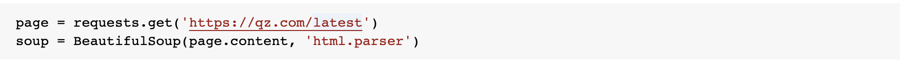
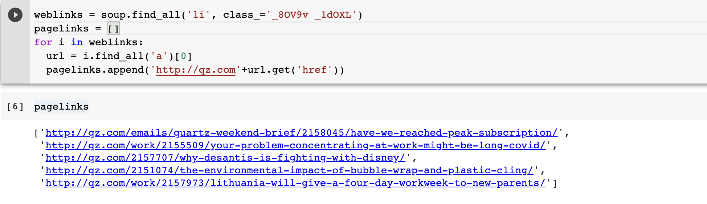
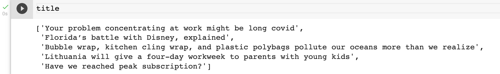
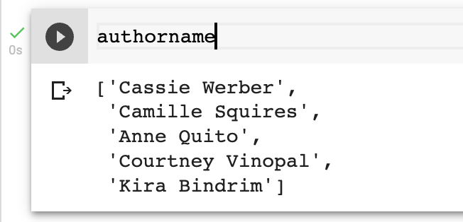
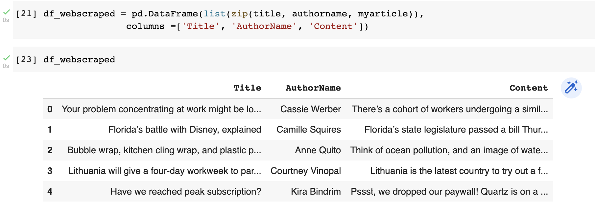

Approach
We build a web scraper to extract the latest news article from a news publishing house called Quartz, and the popular Python package is BeautifulSoup was used to extract the inner content of HTML.
This package parses the web page into the individual HTML/CSS components. To create the “Soup” element, BeautifulSoup takes in the web page hyperlink as an argument. We used the “Soup” element to select the components of the web page to extract the necessary data.
Loading the news articles using requests
The find_all method of the soup object collates all the articles on the page into a list (“weblinks”). The URL corresponding to each article is stored in the “pagelinks” array.
The hyperlinks for each article were passed into a BeautifulSoup object, it was parsed, to get the author name, article title, and article text using the “find” and “find_all” methods in the created “Soup” object.
Results
Titles of the news articles that were webscraped
Author name of the news articles that were webscraped
Dataframe containing all the web scraped data
